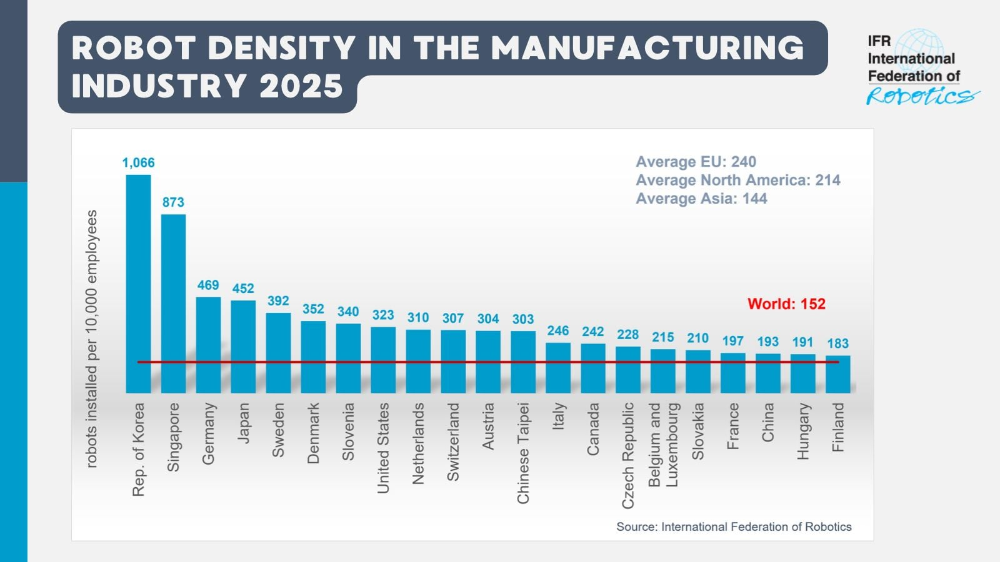

AI技术趋势 / 产业自动化
IFR公布2025机器人密度：中国升至193台/万人
中国制造业机器人密度较2020年增长147%；IFR同时报告全球平均为152台/万人。

国际机器人联合会（IFR）11月12日发布2025年制造业机器人密度数据。韩国以每万名制造业员工1,066台居首，新加坡873台、德国469台；中国为193台，排名第19，较2020年增长147%。该指标以在役工业机器人数量除以制造业员工数，反映自动化装备渗透程度。
数据不是家用或厨房机器人销量，也不代表单个工厂自动化率。对厨电制造的启发在于：机器人部署正成为制造效率与产业能力的可比指标，厨房设备企业可持续关注柔性装配、检测和小批量换线的成熟度。
International Federation of Robotics｜2025年各国制造业机器人密度 · 2026-11-12（法兰克福公告）IFR｜Robot Density in the Manufacturing Industry 2025 图表 · 2026-11-12IFR原始公告：2026-11-12；图表展示2025年数据。